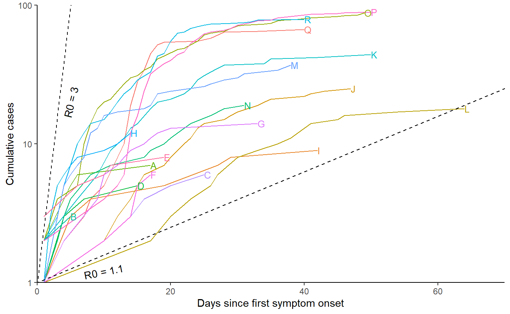

Additional analysis of BC LTHC outbreak data
Source:vignettes/BC_LTHC_additional_analysis.Rmd
BC_LTHC_additional_analysis.RmdBC Long Term Health Care outbreak data
The data is formatted as a list with 100 imputations of the missing symptom onset times. For each imputation, the list contains data on the number of cases, time series of cases (by symptom onset), the facility capacity and the outbreak reported date for each facility outbreak. It also contains the time series of cases as a matrix, but we will not use that here.
# View the final imputation of missing data:
str(BC_LTHC_outbreaks_100Imputs[[100]])
#> List of 6
#> $ Location : int [1:18] 1 2 3 4 5 6 7 8 9 10 ...
#> $ num_cases : int [1:18] 67 9 25 18 88 7 5 19 3 44 ...
#> $ time_series :List of 18
#> ..$ : num [1:40] 1 0 0 1 0 0 1 1 0 1 ...
#> ..$ : num [1:42] 1 0 0 0 2 0 0 1 0 0 ...
#> ..$ : num [1:47] 1 0 0 0 0 0 0 0 0 1 ...
#> ..$ : num [1:64] 1 0 0 0 0 0 0 0 0 0 ...
#> ..$ : num [1:49] 2 0 2 0 0 1 5 4 4 2 ...
#> ..$ : num [1:17] 2 0 0 0 3 1 0 0 0 0 ...
#> ..$ : num [1:15] 1 0 0 2 0 0 1 0 0 0 ...
#> ..$ : num [1:31] 1 0 1 1 1 0 0 2 0 0 ...
#> ..$ : num [1:5] 2 0 0 0 1
#> ..$ : num [1:50] 2 0 0 0 0 2 0 0 2 0 ...
#> ..$ : num [1:40] 1 2 2 1 1 3 2 2 0 1 ...
#> ..$ : num [1:14] 2 0 1 2 2 1 0 0 0 1 ...
#> ..$ : num [1:38] 1 0 0 4 1 1 1 4 1 3 ...
#> ..$ : num [1:25] 1 0 0 0 0 0 0 0 0 1 ...
#> ..$ : num [1:33] 1 0 0 1 0 0 0 0 2 2 ...
#> ..$ : num [1:17] 1 0 0 0 0 0 0 0 0 1 ...
#> ..$ : num [1:50] 2 0 0 0 0 0 0 0 0 2 ...
#> ..$ : num [1:19] 3 0 0 0 0 2 0 0 0 1 ...
#> $ capacity : num [1:18] 139 91 189 120 142 300 87 40 66 236 ...
#> $ reported_date: Date[1:18], format: "2020-04-28" "2020-04-25" ...
#> $ case_matrix : num [1:64, 1:18] 1 0 0 1 0 0 1 1 0 1 ...Capacity by outbreak size plot
plot_data <- tibble(location=BC_LTHC_outbreaks_100Imputs[[100]]$Location, capacity=BC_LTHC_outbreaks_100Imputs[[100]]$capacity, outbreak_size=BC_LTHC_outbreaks_100Imputs[[100]]$num_cases, reported_date = BC_LTHC_outbreaks_100Imputs[[100]]$reported_date)
lab_dates <- pretty(plot_data$reported_date)
#> Warning in as.POSIXlt.POSIXct(x): unknown timezone 'GMT'
p <- plot_data %>%
ggplot(aes(x=capacity,y=outbreak_size,color=as.numeric(reported_date))) +
geom_point(size=1.8) +
geom_abline(slope=1,intercept=0,linetype="dashed",alpha=0.5) +
coord_cartesian(expand=FALSE,xlim = c(0,305), ylim=c(0,95)) +
scale_color_continuous(breaks = as.numeric(lab_dates),
labels = lab_dates,
type = "viridis") +
theme_classic() +
labs(y="Total outbreak size",x="Maximum capacity",
color="Reported date")
show(p)
Cumulative cases plot
# Relabel locations according to manuscript labelling
fac_names <- c("Q", "I", "J", "L", "O", "A", "D", "N", "B", "K", "R", "H", "M", "C", "G", "F", "P", "E")
df <- data.frame(BC_LTHC_outbreaks_100Imputs[[100]]$case_matrix)
colnames(df) <- fac_names
df <- cbind(Day=1:nrow(df),df)
r0_uc_slope <- (3-1)/5
r0_lc_slope <- (1.1-1)/5
p2 <- df %>%
pivot_longer(-1) %>% filter(value > 0) %>% group_by(name) %>% mutate(csum = cumsum(value), name=factor(name, levels=fac_names)) %>%
ggplot(aes(x = Day, y = csum, group = name, colour = name)) +
geom_line(show.legend = FALSE) + theme_classic() + xlab("Days since first symptom onset") + ylab("Cumulative cases") + scale_y_log10() +
geom_abline(slope=r0_lc_slope,intercept=0,linetype="dashed", col="black") +
geom_abline(slope=r0_uc_slope,intercept=0,linetype="dashed", col="black") +
geom_dl(aes(label = name), method = list(dl.combine("last.points"), cex = 0.8)) +
annotate(
"text",
x = 5,
y = exp(5 * r0_uc_slope + 1),
angle = atan(r0_uc_slope * 10) * 180/pi,
label = "R0 = 3"
) +
annotate(
"text",
x = 10,
y = exp(10 * r0_lc_slope - 0.01),
angle = atan(r0_lc_slope * 10) * 180/pi,
label = "R0 = 1.1"
) +
coord_cartesian(ylim=c(1,100), xlim=c(0, 70), expand=FALSE)
show(p2)
Estimate R0 in each outbreak, using EG and ML methods
For each of the 100 imputations, we estimate R0 independently in each facility using exponential growth (EG) and maximum likelihood (ML) methods, with the ‘R0’ library.
nIts <- length(BC_LTHC_outbreaks_100Imputs)
res <- vector(mode = "list", length = nIts)
for (its in 1:nIts){
mGT<-generation.time("gamma", c(5.2, 1.73))
estr0<-rep(list(1),length(BC_LTHC_outbreaks_100Imputs[[1]]$Location) )
for (i in 1:length(BC_LTHC_outbreaks_100Imputs[[1]]$Location) ){
end <- as.numeric(length(BC_LTHC_outbreaks_100Imputs[[its]]$time_series[[i]]) + 1 -
which.max(rev(BC_LTHC_outbreaks_100Imputs[[its]]$time_series[[i]])))
if (end==1){end=as.numeric(length(BC_LTHC_outbreaks_100Imputs[[its]]$time_series[[i]]))}
t <- try(estimate.R(epid = BC_LTHC_outbreaks_100Imputs[[its]]$time_series[[i]],
GT = mGT, time.step = 1,
pop.size = BC_LTHC_outbreaks_100Imputs[[its]]$capacity[i],
begin = 1, end = end,
methods=c("EG", "ML")))
if("try-error" %in% class(t)){estr0[[i]] <- estimate.R(epid =
BC_LTHC_outbreaks_100Imputs[[its]]$time_series[[i]],
GT = mGT, time.step = 1, pop.size =
BC_LTHC_outbreaks_100Imputs[[its]]$capacity[i],
begin = 1, end = end,methods=c("EG"))}else{
estr0[[i]] <- estimate.R(epid =
BC_LTHC_outbreaks_100Imputs[[its]]$time_series[[i]],
GT = mGT, time.step = 1, begin = 1, end = end, pop.size =
BC_LTHC_outbreaks_100Imputs[[its]]$capacity[i],
methods=c("EG", "ML"))}
}
names(estr0) <- paste("Facility", BC_LTHC_outbreaks_100Imputs[[its]]$Location, sep="_")
res[[its]]<-estr0
}Output files and summary
We collect summaries of the R0 estimates from a single imputation (the final one), and also calculate confidence intervals across all 100 imputations as a sensitivity analysis.
# First, save the complete nIts=100 sets of estimates to file (the sensitivity analysis)
# We want the mean of the 100 means, and the CI of those 100 means, per outbreak
er_df <- data.frame(Location=fac_names,
EG_mean=c(rep(NA, length(names(estr0)))),
EG_mean_CI_lower=c(rep(NA, length(names(estr0)))),
EG_mean_CI_upper=c(rep(NA, length(names(estr0)))),
ML_mean=c(rep(NA, length(names(estr0)))),
ML_mean_CI_lower=c(rep(NA, length(names(estr0)))),
ML_mean_CI_upper=c(rep(NA, length(names(estr0)))) )
# To calculate the confidence intervals on the means
normConfInt <- function(x, alpha = 0.05){
mean(x) + qt(1 - alpha / 2, length(x) - 1) * sd(x) * c(-1, 1)}
for (i in 1:length(estr0)){
a<-NULL; b<-NULL;
for (j in 1:nIts){
a <- c(a, res[[j]][[i]]$estimates$EG[1])
b <- c(b, res[[j]][[i]]$estimates$ML[1])
}
er_df[i, 2] <- mean(unlist(a))
er_df[i, 3] <- normConfInt(unlist(a))[1]
er_df[i, 4] <- normConfInt(unlist(a))[2]
er_df[i, 5] <- mean(unlist(b))
er_df[i, 6] <- normConfInt(unlist(b))[1]
er_df[i, 7] <- normConfInt(unlist(b))[2]
}
er_df <- arrange(er_df, Location)
write.table(er_df, file = paste0(outdir,"/R0estimation_results_multiple.txt"))
# show table of results
er_df %>%
kableExtra::kable() %>%
kableExtra::kable_styling(bootstrap_options = c("striped","responsive"))| Location | EG_mean | EG_mean_CI_lower | EG_mean_CI_upper | ML_mean | ML_mean_CI_lower | ML_mean_CI_upper |
|---|---|---|---|---|---|---|
| A | 10.6269093 | -8.8532114 | 30.1070300 | 5.460201 | -1.0344121 | 11.954814 |
| B | 0.1085062 | 0.1085062 | 0.1085062 | 1.324182 | 1.3241818 | 1.324182 |
| C | 1.1573214 | 1.1573214 | 1.1573214 | 1.088969 | 1.0889689 | 1.088969 |
| D | 8.5813549 | 8.5813549 | 8.5813549 | NA | NaN | NaN |
| E | 6.6482600 | -6.4343068 | 19.7308269 | 3.191398 | -0.4845208 | 6.867317 |
| F | 2.6483619 | 2.6483619 | 2.6483619 | 2.481302 | 2.4813016 | 2.481302 |
| G | 3.2251127 | 3.2251127 | 3.2251127 | 2.815736 | 2.8157357 | 2.815736 |
| H | 0.9976363 | -0.8485777 | 2.8438503 | 1.869587 | -2.2292049 | 5.968380 |
| I | 0.9221586 | 0.9221586 | 0.9221586 | 1.210450 | 1.2104496 | 1.210450 |
| J | 1.2938316 | 1.2938316 | 1.2938316 | 1.195217 | 1.1952168 | 1.195217 |
| K | 2.3304750 | -0.0707417 | 4.7316916 | 2.022159 | 0.5724734 | 3.471845 |
| L | 1.4039891 | 1.4039891 | 1.4039891 | NA | NaN | NaN |
| M | 18.7880835 | -59.6174627 | 97.1936297 | 2.424265 | -2.5489625 | 7.397493 |
| N | 1.1345167 | 1.1345167 | 1.1345167 | 1.295400 | 1.2953995 | 1.295400 |
| O | 1.7321747 | -3.5101976 | 6.9745471 | 1.590057 | -0.6351134 | 3.815227 |
| P | 4.9837638 | 3.2858072 | 6.6817205 | 5.343308 | 3.4197483 | 7.266867 |
| Q | 5.2011965 | 3.0231006 | 7.3792923 | 4.917799 | 3.6901495 | 6.145448 |
| R | 1.7401226 | 1.7401226 | 1.7401226 | 1.962847 | 1.9628467 | 1.962847 |
# Secondly, the final imputation as the primary result
er_df <- data.frame(Location=fac_names,
EG=c(rep(NA, length(names(estr0)))),
EG_CI_lower=c(rep(NA, length(names(estr0)))),
EG_CI_upper=c(rep(NA, length(names(estr0)))),
ML=c(rep(NA, length(names(estr0)))),
ML_CI_lower=c(rep(NA, length(names(estr0)))),
ML_CI_upper=c(rep(NA, length(names(estr0)))) )
for (i in 1:length(estr0)){
er_df[i, 2] <- estr0[[i]]$estimates$EG[1]
er_df[i, 3] <- estr0[[i]]$estimates$EG$conf.int[1]
er_df[i, 4] <- estr0[[i]]$estimates$EG$conf.int[2]
er_df[i, 5] <- ifelse(is.null(estr0[[i]]$estimates$ML[1]),NA,estr0[[i]]$estimates$ML[1])
er_df[i, 6] <- ifelse(is.null(estr0[[i]]$estimates$ML[1]),NA,estr0[[i]]$estimates$ML$conf.int[1])
er_df[i, 7] <- ifelse(is.null(estr0[[i]]$estimates$ML[1]),NA,estr0[[i]]$estimates$ML$conf.int[2])
}
er_df <- arrange(er_df, Location)
write.table(er_df, file=paste0(outdir,"/R0estimation_results_single.txt") )
# show table of results
er_df %>%
kableExtra::kable() %>%
kableExtra::kable_styling(bootstrap_options = c("striped","responsive"))| Location | EG | EG_CI_lower | EG_CI_upper | ML | ML_CI_lower | ML_CI_upper |
|---|---|---|---|---|---|---|
| A | 3.0019605 | 0.0634776 | 64.353581 | 3.972551 | 0.4554797 | 14.088511 |
| B | 0.1085062 | 0.0000032 | 10.860645 | 1.324182 | 0.0105389 | 8.939934 |
| C | 1.1573214 | 0.6032579 | 2.213223 | 1.088969 | 0.2293632 | 3.045568 |
| D | 8.5813549 | 0.0134894 | 958.227126 | NA | NA | NA |
| E | 0.5181015 | 0.1915469 | 1.125294 | 0.720507 | 0.1517629 | 2.015055 |
| F | 2.6483619 | 0.8002503 | 10.352171 | 2.481302 | 0.4125962 | 7.661795 |
| G | 3.2251127 | 0.6506007 | 16.932821 | 2.815736 | 0.5930789 | 7.875017 |
| H | 0.7188200 | 0.2881224 | 1.598253 | 1.202215 | 0.4311160 | 2.583873 |
| I | 0.9221586 | 0.5117499 | 1.582353 | 1.210450 | 0.3010219 | 3.138771 |
| J | 1.2938316 | 0.9845823 | 1.724130 | 1.195217 | 0.5743125 | 2.154633 |
| K | 1.3991400 | 1.0340789 | 1.910533 | 1.378132 | 0.7674802 | 2.249427 |
| L | 1.4039891 | 1.0733626 | 1.898347 | NA | NA | NA |
| M | 1.0422230 | 0.6580577 | 1.622863 | 1.321332 | 0.6861250 | 2.263093 |
| N | 1.1345167 | 0.8169595 | 1.576101 | 1.295400 | 0.6077655 | 2.371460 |
| O | 1.2304994 | 1.0090784 | 1.502667 | 1.338631 | 0.9118601 | 1.881481 |
| P | 4.7932071 | 2.8437951 | 8.641037 | 5.103303 | 2.9367991 | 8.138745 |
| Q | 4.7467273 | 3.0491734 | 7.749353 | 5.183023 | 3.3077990 | 7.660501 |
| R | 1.7401226 | 1.3305197 | 2.296654 | 1.962847 | 1.3124932 | 2.799088 |
Quick results visualisation
Some simple plots of the results.
hist(er_df$EG, breaks=20, main="EG R0 estimates", xlab="R0", col="steelblue4")
hist(er_df$ML, breaks=20, main="ML R0 estimates", xlab="R0", col="steelblue4")
Attack rates
We calculate the attack rate in each outbreak as the number of cases divided by the facility capacity. We incorporate uncertainty in the attack rate by varying the denominator from 85% to 115% of the known capacity. R0 is also estimated from the attack rate, according to the relation -log(1-A_r)/A_r = R0.
AR_table <- data.frame("Facility" = fac_names,
"No. cases" = BC_LTHC_outbreaks_100Imputs[[100]]$num_cases,
"Capacity" = BC_LTHC_outbreaks_100Imputs[[100]]$capacity,
"A_r" =
100*BC_LTHC_outbreaks_100Imputs[[100]]$num_cases/BC_LTHC_outbreaks_100Imputs[[100]]$capacity,
"A_r (85% cap.)" =
100*BC_LTHC_outbreaks_100Imputs[[100]]$num_cases/(BC_LTHC_outbreaks_100Imputs[[100]]$capacity*0.85),
"A_r (115% cap.)" =
100*BC_LTHC_outbreaks_100Imputs[[100]]$num_cases/(BC_LTHC_outbreaks_100Imputs[[100]]$capacity*1.15),
"R0 (A_r)" =
-log(1-(BC_LTHC_outbreaks_100Imputs[[100]]$num_cases/BC_LTHC_outbreaks_100Imputs[[100]]$capacity))/(BC_LTHC_outbreaks_100Imputs[[100]]$num_cases/BC_LTHC_outbreaks_100Imputs[[100]]$capacity),
"R0 (A_r, 85% cap.)" =
-log(1-(BC_LTHC_outbreaks_100Imputs[[100]]$num_cases/BC_LTHC_outbreaks_100Imputs[[100]]$capacity*0.85))/(BC_LTHC_outbreaks_100Imputs[[100]]$num_cases/BC_LTHC_outbreaks_100Imputs[[100]]$capacity*0.85),
"R0 (A_r, 115% cap.)" =
-log(1-(BC_LTHC_outbreaks_100Imputs[[100]]$num_cases/BC_LTHC_outbreaks_100Imputs[[100]]$capacity*1.15))/(BC_LTHC_outbreaks_100Imputs[[100]]$num_cases/BC_LTHC_outbreaks_100Imputs[[100]]$capacity*1.15) )
AR_table <- arrange(AR_table, Facility)
# show table of results
AR_table %>%
kableExtra::kable() %>%
kableExtra::kable_styling(bootstrap_options = c("striped","responsive"))| Facility | No..cases | Capacity | A_r | A_r..85..cap.. | A_r..115..cap.. | R0..A_r. | R0..A_r..85..cap.. | R0..A_r..115..cap.. |
|---|---|---|---|---|---|---|---|---|
| A | 7 | 300 | 2.333333 | 2.745098 | 2.028986 | 1.011851 | 1.010050 | 1.013662 |
| B | 3 | 66 | 4.545454 | 5.347594 | 3.952569 | 1.023440 | 1.019831 | 1.027084 |
| C | 6 | 236 | 2.542373 | 2.991027 | 2.210759 | 1.012932 | 1.010963 | 1.014910 |
| D | 5 | 87 | 5.747126 | 6.761325 | 4.997501 | 1.029886 | 1.025251 | 1.034578 |
| E | 8 | 89 | 8.988764 | 10.575017 | 7.816317 | 1.047833 | 1.040267 | 1.055548 |
| F | 6 | 92 | 6.521739 | 7.672634 | 5.671077 | 1.034100 | 1.028786 | 1.039487 |
| G | 14 | 210 | 6.666667 | 7.843137 | 5.797101 | 1.034893 | 1.029451 | 1.040413 |
| H | 12 | 75 | 16.000000 | 18.823529 | 13.913044 | 1.089709 | 1.074871 | 1.105114 |
| I | 9 | 91 | 9.890110 | 11.635423 | 8.600096 | 1.052974 | 1.044548 | 1.061585 |
| J | 25 | 189 | 13.227513 | 15.561780 | 11.502185 | 1.072617 | 1.060821 | 1.084774 |
| K | 44 | 236 | 18.644068 | 21.934197 | 16.212233 | 1.106714 | 1.088749 | 1.125506 |
| L | 18 | 120 | 15.000000 | 17.647059 | 13.043478 | 1.083460 | 1.069746 | 1.097659 |
| M | 37 | 151 | 24.503311 | 28.827425 | 21.307227 | 1.147116 | 1.121314 | 1.174608 |
| N | 19 | 40 | 47.500000 | 55.882353 | 41.304348 | 1.356541 | 1.280731 | 1.446607 |
| O | 88 | 142 | 61.971831 | 72.908036 | 53.888549 | 1.560133 | 1.420292 | 1.749947 |
| P | 89 | 154 | 57.792208 | 67.990833 | 50.254094 | 1.492529 | 1.375652 | 1.643764 |
| Q | 67 | 139 | 48.201439 | 56.707575 | 41.914295 | 1.364706 | 1.286623 | 1.457915 |
| R | 79 | 92 | 85.869565 | 101.023018 | 74.669187 | 2.278851 | 1.793323 | 4.437495 |
Compare attack rate to R0 estimates from different methods
Next, compare EG and ML estimates with results from the Bayesian hierarchical model, against the attack rate.
# The Bayesian hierarchical model results are manually set here, so remember to update these if you are adapting this script for another analysis.
BHM <- c(0.56, 0.79, 0.86, 0.93, 1.2, 1.47, 1.52, 1.57, 2.1, 2.9, 3.2, 3.27, 3.32, 4.55, 5.73, 6.09, 8.17, 9.17)
# The following aren't used until the next chunk:
BHM_multi <- c(2.6, 2.97, 2.62, 3.28, 3.73, 3.68, 3.62, 5.39, 2.87, 2.71, 3.82, 2.37, 4.73, 6.65, 6.7, 6.91, 9.95, 9.13) # multi-level zeta point estimates
BHM_upCI <- c(1.17, 1.79, 1.54, 1.89, 2.21, 2.5, 2.33, 2.69, 3.23, 3.98, 4.35, 4.51, 4.58, 6.98, 7.76, 8.04, 11.38, 11.97) # BHM upper credible interval
BHM_multi_upCI <- c(4.96, 5.99, 4.87, 6.81, 7.46, 6.9, 6.54, 9.52, 5.14, 4.03, 5.55, 3.43, 7.23, 10.32, 8.9, 9.01, 13.21, 12.35) # multi-level zeta upper credible interval
BHM_lowCI <- c(0.16, 0.22, 0.35, 0.3, 0.46, 0.7, 0.91, 0.7, 1.29, 2.13, 2.41, 2.42, 2.43, 3.05, 4.37, 4.7, 5.29, 7.16) # BHM lower credible interval
BHM_multi_lowCI <- c(1.26, 1.38, 1.35, 1.59, 1.7, 1.8, 1.85, 2.45, 1.61, 1.83, 2.67, 1.6, 3.08, 4.1, 5.06, 5.31, 7.44, 7.06) # multi-level zeta lower credible interval
scatterdata <- data.frame(c(AR_table$Facility,AR_table$Facility,AR_table$Facility), c(AR_table$A_r,AR_table$A_r,AR_table$A_r), c(er_df$EG,er_df$ML,BHM), c(rep("Exponential growth",length(AR_table$A_r)), rep("Maximum likelihood",length(AR_table$A_r)), rep("Bayesian hierarchical",length(AR_table$A_r))) )
names(scatterdata) <- c("Facility", "ar", "r0", "Method")
p <- ggplot(scatterdata, aes(x=ar, y=r0, color=Method)) +
geom_point(size=3, alpha=0.8) +
geom_smooth(method=lm, se=FALSE, fullrange=TRUE)+
#theme_sleek() +
xlab("Attack Rate (%)") + ylab(expression(R['0,k'])) + theme(legend.position="right", legend.title = element_text(size=10, face="bold"), legend.text=element_text(size=10)) +
#scale_colour_ggthemr_d() +
annotate(geom="label", x=75, y=9.7, label=round(cor(AR_table$A_r, BHM),2), colour=palette()[2]) +
annotate(geom="label", x=75, y=1.7, label=round(cor(AR_table$A_r, er_df$EG),2), colour=palette()[3])+
annotate(geom="label", x=75, y=3.5, label=round(cor(AR_table$A_r[!is.na(er_df$ML)], er_df$ML[!is.na(er_df$ML)]),2), colour=palette()[4])
# The geom_smooth/geom_point warning messages can be safely ignored - these are caused by the missing ML values
p
#> `geom_smooth()` using formula 'y ~ x'
#> Warning: Removed 2 rows containing non-finite values (stat_smooth).
#> Warning: Removed 2 rows containing missing values (geom_point).
Compare R0 estimates from three main methods (BHM, EG, ML)
This figure compares point estimates and confidence intervals/credible intervals from the BHM (single- and multi- level zeta), EG and ML methods.
## First combine the results into a data frame
df <- data.frame(c(rep(er_df$Location, 4)),
(c(er_df$EG, er_df$ML , BHM, BHM_multi)),
(c(er_df$EG_CI_upper, er_df$ML_CI_upper, BHM_upCI, BHM_multi_upCI)),
(c(er_df$EG_CI_lower, er_df$ML_CI_lower, BHM_lowCI, BHM_multi_lowCI)),
c(rep("Exponential growth",
length(er_df$Location)),
rep("Maximum likelihood",
length(er_df$Location)),
rep("Bayesian hierarchical",
length(er_df$Location)),
rep("Bayesian hierarchical, multi-level",
length(er_df$Location))))
names(df) <- c("Location", "R0", "lowerCI", "upperCI", "Method")
p<-ggplot(df, aes(y=Location, x=R0, group=Method, color=Method)) +
xlab(expression(R['0,k'])) + ylab("Location") +
geom_errorbarh(mapping=aes(xmin=lowerCI, xmax=upperCI), size = 0.5, alpha=0.99, position=position_dodgev(height=0.8), height=0) +
geom_point(position=position_dodgev(height=0.8)) + #theme_sleek() +
theme(legend.position="bottom") +
guides(colour = guide_legend(nrow = 2)) + scale_x_continuous(trans="log10", limits=c(0.000001,1000), labels=c("0.001","0.01","0.1", "1.0","10","100", "1000"), breaks=c(0.001,0.01, 0.1, 1, 10, 100, 1000))
p
#> Warning: Removed 2 rows containing missing values (geom_errorbarh).
#> Warning: Removed 2 rows containing missing values (geom_point).
Correlations between R0 estimates and additional LTHC facility covariate data
In this section we investigate any relationships between the facility R0 estimates and additional data obtained on the LTHC facilities (age of facility, room type etc.). The additional data is primarily contained in italicBC_OSABC_facilitydata.rdaitalic, and some factors we have loaded already (e.g. outbreak reported date).
First, we take a look at a few of these individually:
# Take a look at the additional factor data:
head(BC_OSABC_facilitydata)
#> Location LTHC facility type Year facility opened Resident room type
#> 1 1 Non-profit 1974 Mostly single
#> 2 2 Private 1960 Single
#> 3 3 Public 1998 Mostly single
#> 4 4 <NA> NA <NA>
#> 5 5 Non-profit 1947 Mostly multi
#> 6 6 Non-profit 1989 Mostly single
#> Accreditation status Direct care hours /resident/day
#> 1 Accredited 3.36
#> 2 Accredited 3.36
#> 3 Accredited 3.50
#> 4 <NA> NA
#> 5 Accredited 3.60
#> 6 Accredited 3.03
#> Average resident age (years) Average resident stay (days)
#> 1 88 831
#> 2 91 1063
#> 3 84 1296
#> 4 NA NA
#> 5 85 761
#> 6 87 699
#> Residents dependent for daily activities (%)
#> 1 29.8
#> 2 27.7
#> 3 49.3
#> 4 NA
#> 5 36.6
#> 6 28.8
#> Number of lodged complaints 2018/19 Number of disease outbreaks 2018/19
#> 1 0 0
#> 2 1 0
#> 3 0 1
#> 4 NA NA
#> 5 0 2
#> 6 5 0
#> Identity of initial COVID-19 case
#> 1 Staff/worker
#> 2 Staff/worker
#> 3 Staff/worker
#> 4 Staff/worker
#> 5 Resident/patient
#> 6 Resident/patient
# Re-order to alphabetical labelling
BC_OSABC_facilitydata$Facility = fac_names
BC_OSABC_facilitydata <- arrange(BC_OSABC_facilitydata, Facility)
# Was the initial (by symptom onset) case staff?
# (2 outbreaks with multiple earliest symptom onsets, both resident & staff: 9 and 17.
# These are coded as unknown.)
staff_cat<-as.factor(BC_OSABC_facilitydata$`Identity of initial COVID-19 case`)
# Remove the 'unknown' categorisations to make this factor dichotomous, and calculate the correlation with R0
staff_cat_di <- staff_cat[staff_cat!="Unknown"]
staff_cat_di <- unclass(staff_cat_di)
# Initial case
print(paste0("BHM and identity of initial case correlation = ", round(cor(staff_cat_di, BHM[staff_cat!="Unknown"]),3)))
#> [1] "BHM and identity of initial case correlation = 0.152"
print(paste0("BHM multi-level and identity of initial case correlation = ", round(cor(staff_cat_di, BHM_multi[staff_cat!="Unknown"]),3)))
#> [1] "BHM multi-level and identity of initial case correlation = 0.007"
print(paste0("BHM and identity of initial case correlation = ", round(cor(staff_cat_di, er_df$EG[staff_cat!="Unknown"]),3)))
#> [1] "BHM and identity of initial case correlation = -0.246"
print(paste0("BHM and identity of initial case correlation = ", round(cor(unclass(staff_cat[staff_cat!="Unknown" & !is.na(er_df$ML)]), er_df$ML[staff_cat!="Unknown" & !is.na(er_df$ML)]),3))) #only non-NA ML ests
#> [1] "BHM and identity of initial case correlation = 0.056"
# Facility capacity
fac_cap <- BC_LTHC_outbreaks_100Imputs[[100]]$capacity[order(fac_names)]
print(paste0("BHM and facility capacity correlation = ", round(cor(BHM, fac_cap),3)))
#> [1] "BHM and facility capacity correlation = -0.167"
print(paste0("BHM multi-level and facility capacity correlation = ", round(cor(BHM_multi, fac_cap),3)))
#> [1] "BHM multi-level and facility capacity correlation = -0.282"
print(paste0("EG and facility capacity correlation = ", round(cor(er_df$EG, fac_cap),3)))
#> [1] "EG and facility capacity correlation = 0.073"
print(paste0("ML and facility capacity correlation = ", round(cor(er_df$ML[!is.na(er_df$ML)], fac_cap[!is.na(er_df$ML)]),3)))
#> [1] "ML and facility capacity correlation = 0.295"
# outbreak reported date
rep_date <- BC_LTHC_outbreaks_100Imputs[[100]]$reported_date[order(fac_names)]
rep_date <- as.numeric(as.POSIXct(rep_date, format="%Y-%m-%d %H:%M:%S", tz="GMT"))
print(paste0("BHM and facility capacity correlation = ", round(cor(BHM, rep_date),3)))
#> [1] "BHM and facility capacity correlation = -0.254"
print(paste0("BHM multi-level and facility capacity correlation = ", round(cor(BHM_multi, rep_date),3)))
#> [1] "BHM multi-level and facility capacity correlation = -0.09"
print(paste0("EG and facility capacity correlation = ", round(cor(er_df$EG, rep_date),3)))
#> [1] "EG and facility capacity correlation = -0.069"
print(paste0("ML and facility capacity correlation = ", round(cor(er_df$ML[!is.na(er_df$ML)], rep_date[!is.na(er_df$ML)]),3)))
#> [1] "ML and facility capacity correlation = -0.044"Finally, we create figures and tables for all factors available.
# Make a tibble with the loaded factor data, but also outbreak reported date and facility capacity.
cor_data <- as_tibble(BC_OSABC_facilitydata)
cor_data <- cbind(cor_data, fac_cap, rep_date)
names(cor_data)[(length(cor_data)-1):length(cor_data)] <- c("Facility capacity", "COVID-19 outbreak reported date")
# Create correlation table, for numeric covariates
rho_table <- cor_data %>%
dplyr::select("Number of disease outbreaks 2018/19","Number of lodged complaints 2018/19",
"Residents dependent for daily activities (%)","Average resident stay (days)",
"Average resident age (years)","Direct care hours /resident/day",
"Facility capacity", "COVID-19 outbreak reported date", "Year facility opened")
rho_table <-
purrr::map2_df(rho_table,colnames(rho_table),function(x,var_name){
cor.test(x,BHM) %>%
broom::tidy() %>%
mutate(Property = var_name)
}) %>%
dplyr::select(Property,everything())
# BHM correlations
rho_table %>%
kableExtra::kable() %>%
kableExtra::kable_styling(bootstrap_options = c("striped","responsive"))| Property | estimate | statistic | p.value | parameter | conf.low | conf.high | method | alternative |
|---|---|---|---|---|---|---|---|---|
| Number of disease outbreaks 2018/19 | -0.2270282 | -0.8405090 | 0.4158149 | 13 | -0.6622703 | 0.3227725 | Pearson’s product-moment correlation | two.sided |
| Number of lodged complaints 2018/19 | -0.5396202 | -2.3109734 | 0.0378793 | 13 | -0.8240837 | -0.0378087 | Pearson’s product-moment correlation | two.sided |
| Residents dependent for daily activities (%) | 0.1531161 | 0.5586554 | 0.5858915 | 13 | -0.3897143 | 0.6169853 | Pearson’s product-moment correlation | two.sided |
| Average resident stay (days) | 0.3763166 | 1.4644810 | 0.1668234 | 13 | -0.1684115 | 0.7449694 | Pearson’s product-moment correlation | two.sided |
| Average resident age (years) | 0.0137734 | 0.0496656 | 0.9611438 | 13 | -0.5020315 | 0.5223508 | Pearson’s product-moment correlation | two.sided |
| Direct care hours /resident/day | 0.3959211 | 1.5545441 | 0.1440545 | 13 | -0.1459408 | 0.7550483 | Pearson’s product-moment correlation | two.sided |
| Facility capacity | -0.1668244 | -0.6767814 | 0.5082118 | 16 | -0.5879053 | 0.3253887 | Pearson’s product-moment correlation | two.sided |
| COVID-19 outbreak reported date | -0.2543562 | -1.0520253 | 0.3084179 | 16 | -0.6446708 | 0.2411508 | Pearson’s product-moment correlation | two.sided |
| Year facility opened | -0.1650633 | -0.5797485 | 0.5728084 | 12 | -0.6396250 | 0.4006005 | Pearson’s product-moment correlation | two.sided |
# And correlations for dichotomous categorical factors (point-biserial)
print(paste0("BHM and identity of initial case (is staff) correlation = ", cor(unclass(as.factor(cor_data$"Identity of initial COVID-19 case"[cor_data$"Identity of initial COVID-19 case"!="Unknown"])), BHM[cor_data$"Identity of initial COVID-19 case"!="Unknown"])))
#> [1] "BHM and identity of initial case (is staff) correlation = 0.152020983211341"
# Make this one negative since 'not accredited' is associated with a higher number:
print(paste0("BHM and (positive) accreditation status correlation = ", -cor(unclass(as.factor(cor_data$"Accreditation status"[!is.na(cor_data$"Accreditation status")])), BHM[!is.na(cor_data$"Accreditation status")])))
#> [1] "BHM and (positive) accreditation status correlation = 0.272308889310071"
## Plot correlations with R0
# separate numeric and character factors into 2 plots
cols_to_plot_num <- c(3, 6, 7, 8, 9, 10, 11, 14, 15)
cols_to_plot_cat <- c(2, 4, 5, 12)
cor_data <- cbind(cor_data, BHM)
cordatalong_num <- pivot_longer(cor_data, cols = all_of(cols_to_plot_num), names_to = "Factor", values_to = "Value")
cordatalong_cat <- pivot_longer(cor_data, cols = all_of(cols_to_plot_cat), names_to = "Factor", values_to = "Value")
# (modified a few aesthetics of figure manually for paper - removed second R_0,k label, rearranged some titles that were cut off)
p1 <- ggplot(data=cordatalong_num, aes(x=Value, y = BHM)) +
geom_point(size=2, colour = "#E84646") + facet_wrap(~Factor, scales = "free", ncol=4) + xlab("") + ylab(expression(R['0,k'])) +
theme(text = element_text(size=12), axis.title.y = element_text(size = 15))
p2 <- ggplot(data=cordatalong_cat, aes(x=Value, y = BHM)) +
geom_point(size=2, colour = "#E84646") + facet_wrap(~Factor, scales = "free", ncol=4) + xlab("") + ylab(expression(R['0,k'])) +
theme(text = element_text(size=12), axis.title.y = element_text(size = 15)) +
theme(axis.text.x = element_text(angle = 45, hjust=1))
grid.arrange(grobs = list(p2, p1), nrow = 2, heights = c(1.1,3))
#> Warning: Removed 22 rows containing missing values (geom_point).
# If using paper colour scheme, reset the colour theme:
#ggthemr_reset()